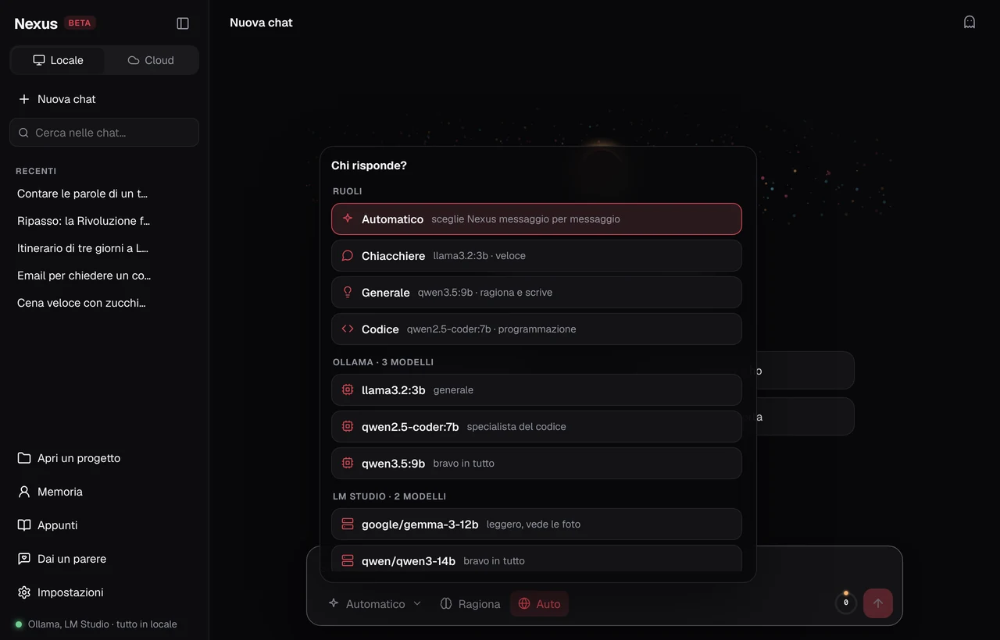
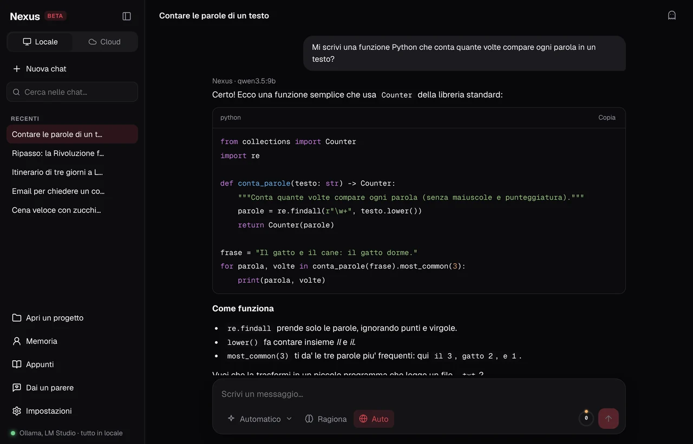

Nuova chat
Buonasera, Giulia!
Sono Nexus. Su cosa lavoriamo oggi?
Mi fai un piano di studio di 3 giorni per l'esame di storia?
Nexus · llama3.2:3b
Scrivi un messaggio…
✦ Automatico ⌄◐ Ragiona◎ Auto
0↑
Wi-Fi spento · risponde lo stesso
Le chat restano nei tuoi Documenti
Gemini · messaggi gratis finiti
Groq · risponde lui


Sai sempre quanto ricorda.
appunti/piano_studio.mdBanco di lavoro
# Piano di studio · Storia
- Giorno 1: Rivoluzione
+ Giorno 1: Rivoluzione francese, cause e fasi
+ Giorno 2: Napoleone e Congresso di Vienna
+ Giorno 3: 20 domande di ripasso
ApprovaScartaAnnulla
Modifica i file. Con il tuo sì.
01 · LocaleChiedi.
Risponde
il tuo PC.
Modelli gratis, sul tuo computer,
anche senza internet.
02 · Due mondi, un'app
Serve più potenza? Un clic.
Cloud · anche gratis
Finiti i messaggi? Passa al prossimo.
03 · CostellazioneScegli
chi risponde.
Un modello per chiacchierare, uno per ragionare, uno per il codice.
04 · CodiceProgramma
con te.
Python, GDScript, JavaScript, C#… con il tasto Copia.
05 · Memoria e banco di lavoro
Nexus
L'IA sul tuo PC. Gratis e in italiano.
Iscriviti alla beta · solproix-95.github.io